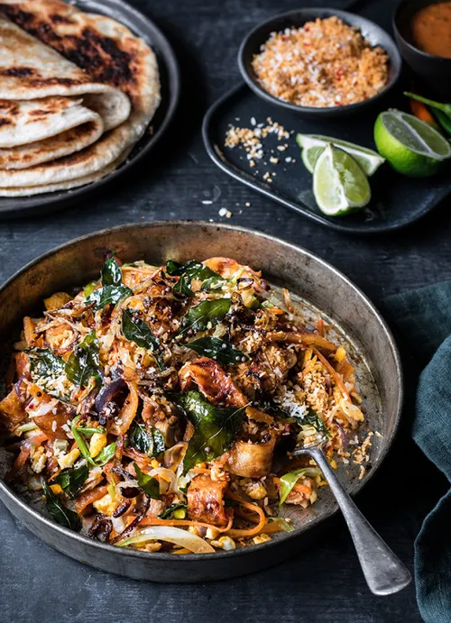
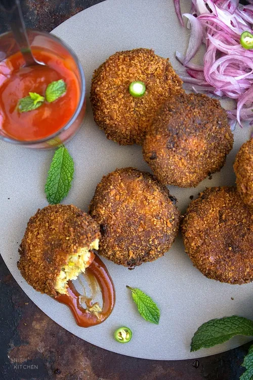
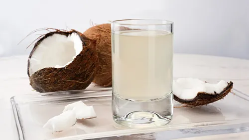
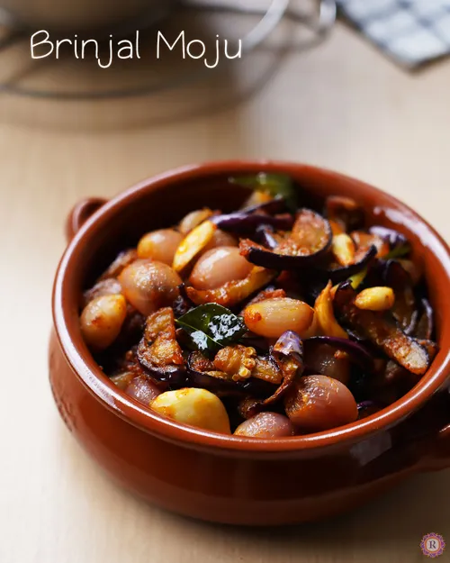

Featured Items
-

Chicken Kottu Roti
Shredded flatbread stir-fried with chicken, vegetables, and spices.
-

Fish Cutlets
Spiced fish mixed with potatoes, breaded, and deep-fried.
-

King Coconut Water
Refreshing and hydrating coconut water from young green coconuts.
-

Wambatu Moju
Wambatu moju is a sweet and sour eggplant pickle that makes a delicious side dish.
About Us
Welcome to Luzzy, a culinary haven where every dish tells a story of passion, flavor, and the artistry of Sri Lankan cuisine. Located in the heart of Srilanka, Luzzy is more than a restaurant; it's an exploration of taste, culture, and the warmth of Sri Lankan hospitality.